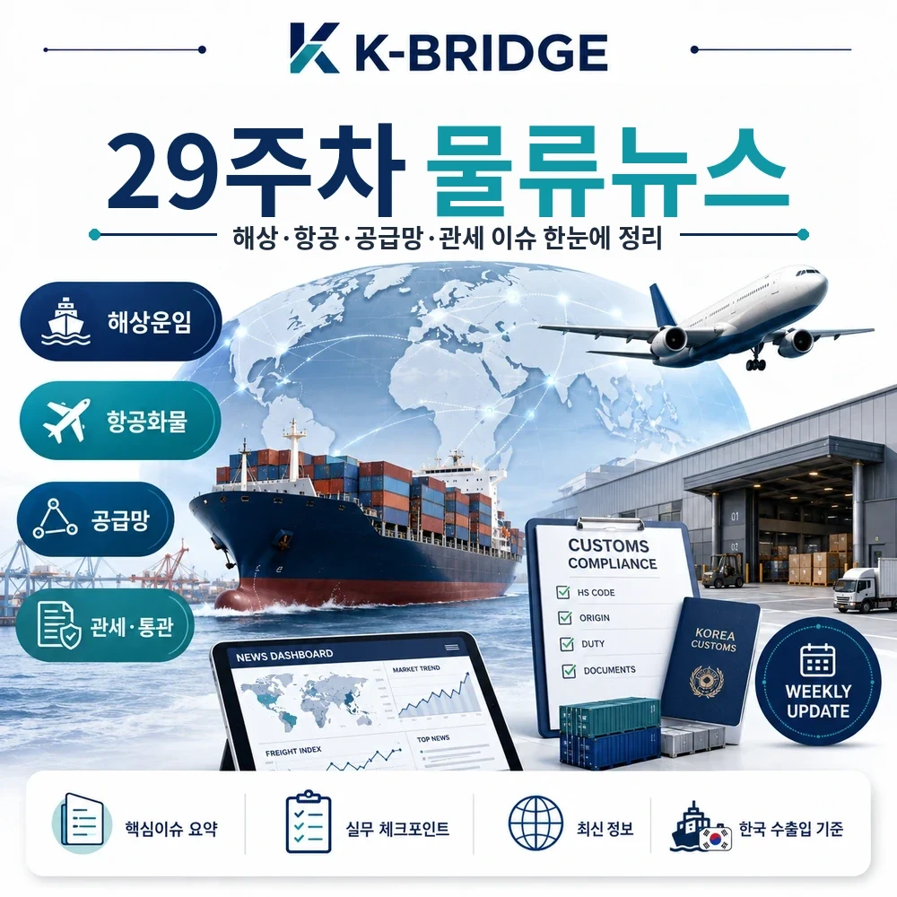
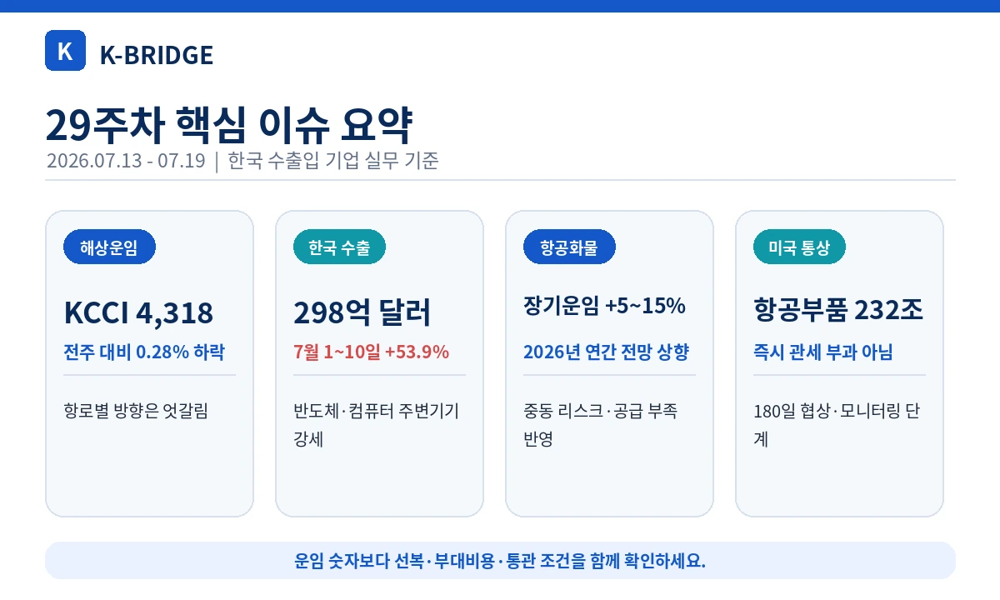
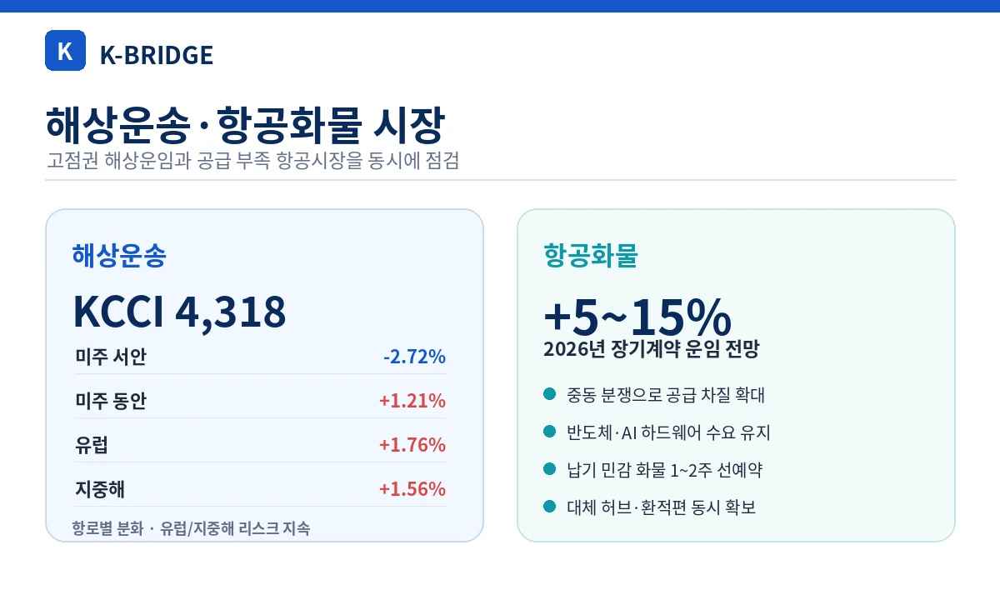
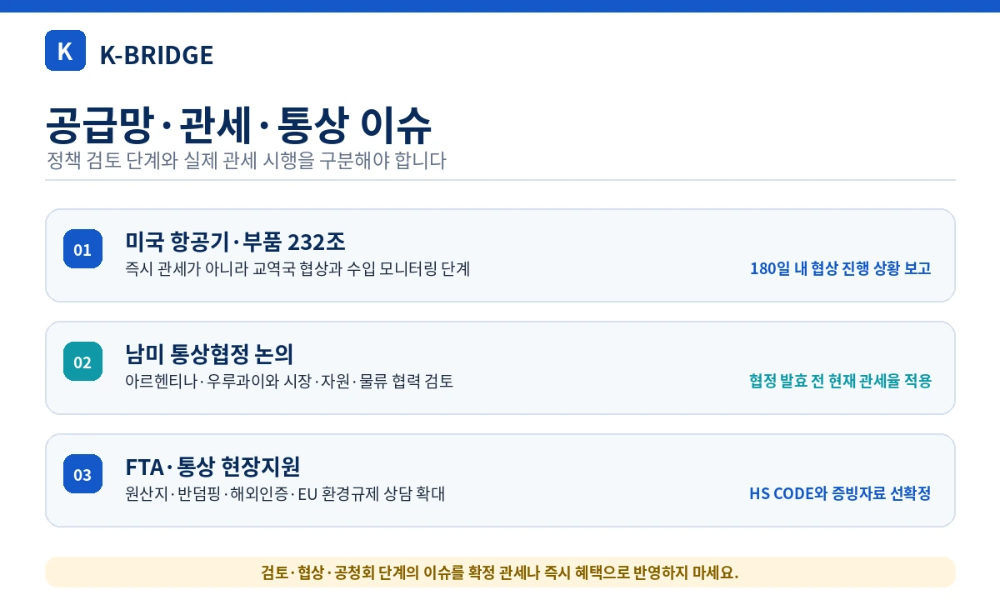
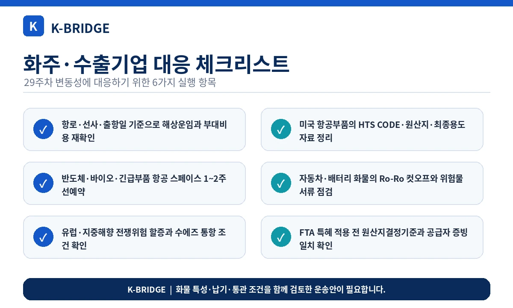

핵심 요약
29주차 물류시장은 해상운임의 고점 숨 고르기와 항로별 차별화, 반도체·자동차 중심의 한국 수출 확대, 중동 리스크를 반영한 항공화물 장기운임 전망 상향, 미국·남미 통상 이슈에 대한 사전 대응이 핵심입니다.

29주차 시장 한눈에 보기
종합지수만 보면 급등세가 멈춘 듯 보이지만, 실제로는 미주 서안은 조정되고 미주 동안·유럽·지중해는 상승했습니다. 반도체와 자동차 수출이 늘고 항공 선복 전망도 다시 타이트해져, 화물 특성과 항로에 따라 체감 물류비가 크게 달라질 수 있습니다.
| 항로·지표 | 2026.07.13 | 전주 대비 | 실무 해석 |
|---|---|---|---|
| KCCI 종합 | 4,318 | -0.28% | 직전 주 급등 이후 고점권 보합 |
| 미주 서안 | $6,734/FEU | -2.72% | 단기 조정이나 절대 운임은 여전히 높음 |
| 미주 동안 | $8,523/FEU | +1.21% | 장거리 운항·리드타임 부담 지속 |
| 유럽 | $5,426/FEU | +1.76% | 중동·수에즈 변수와 성수기 수요 반영 |
| 지중해 | $6,569/FEU | +1.56% | 우회운항·연료비 변동성 지속 |
지표 기준: KCCI는 부산발 40피트 컨테이너 현물운임을 중심으로 집계합니다. 실제 견적은 선사, 품목, 출항일, 장비 수급과 부대비용에 따라 달라질 수 있습니다.

해상운송·운임 이슈
KCCI 4,318 - 종합지수는 보합, 항로별 방향은 엇갈림
7월 13일 KCCI 종합지수는 4,318로 전주 4,330보다 12포인트 낮았습니다. 미주 서안은 2.72% 하락했지만 미주 동안은 1.21%, 유럽은 1.76%, 지중해는 1.56% 상승했습니다. 종합지수만 보고 전 항로의 운임이 하락했다고 판단하기보다 실제 출항지·도착지·선사별 운임을 다시 확인해야 합니다.
Hapag-Lloyd, 강한 수요와 운임을 반영해 연간 전망 상향
Hapag-Lloyd는 7월 13일 강한 시장 수요와 긍정적인 운임 흐름을 근거로 2026년 실적 전망을 상향했습니다. 다만 홍해 정세와 운임 변동성이 커 전망의 불확실성도 높다고 밝혔습니다.
수에즈 운항 재개 검토 - 운임 상승과 하락 요인이 동시에 존재
일부 선사가 수에즈 운항 재개를 검토하면서 희망봉 우회로 묶였던 선복이 돌아올 가능성이 커졌습니다. 정상화가 빨라지면 공급 증가로 운임이 조정될 수 있지만, 중동 긴장이 재확대되면 우회운항과 보험·전쟁위험 할증이 다시 강화될 수 있습니다.
항공화물·수출 물동량
항공화물 장기운임 전망, 2026년 연간 5~15% 상승으로 수정
Xeneta는 7월 17일 중동 분쟁의 영향을 반영해 2026년 항공화물 장기계약 운임 전망을 전년 대비 5~15% 상승으로 수정했습니다. 반도체·AI 하드웨어처럼 납기 민감도가 높은 화물은 스팟 운임만 비교하기보다 장기계약, 블록스페이스, 대체 허브를 함께 검토해야 합니다.
7월 1~10일 수출 298억달러 - 반도체·컴퓨터 주변기기 강세
관세청 잠정치에 따르면 7월 1~10일 한국 수출은 298억달러로 전년 동기 대비 53.9% 증가했습니다. 반도체는 193.0%, 컴퓨터 주변기기는 208.1% 늘었습니다. 통관일수와 기저효과를 감안해야 하지만, 고부가가치 전자화물의 항공·Sea&Air 수요가 유지될 가능성을 보여줍니다.
6월 자동차 수출 67.1억달러 - 북미·EU향 수출 확대
6월 자동차 수출액은 전년 동월 대비 5.8% 증가한 67.1억달러로 6월 기준 역대 최대치를 기록했습니다. 북미는 12.3%, EU는 13.7% 증가했고 월간 친환경차 수출량은 처음으로 10만대를 넘었습니다. 완성차 선복뿐 아니라 배터리·부품 포장, 위험물 서류, Ro-Ro 컷오프 관리가 중요해집니다.

공급망·관세·통상 이슈
미국 항공기·엔진·부품 Section 232 - 즉시 관세가 아닌 협상 단계
미국은 상업용 항공기·제트엔진·관련 부품 수입이 국가안보를 위협한다고 판단했지만, 7월 9일 포고문에서 즉시 관세를 부과하지 않고 주요 교역국과 협상을 진행하도록 했습니다. 상무부와 USTR은 180일 이내 협상 진행 상황을 보고할 예정입니다.
한-아르헨티나·한-우루과이 통상협정 논의
정부는 7월 16일 두 국가와의 통상협정 추진을 위한 공청회를 열었습니다. 아르헨티나는 핵심광물·셰일가스 등 자원 협력 가능성이 크고, 우루과이는 남미 물류 허브와 시장 진입 거점으로 평가됩니다. 협정은 아직 체결·발효 단계가 아니므로 현재 관세율을 적용해야 합니다.
FTA·통상 현장지원 - 원산지·반덤핑·해외인증 대응 확대
산업통상부는 7월 14일 수원에서 수출기업을 대상으로 ‘찾아가는 FTA·통상 데스크’를 열었습니다. FTA 활용과 원산지, 반덤핑·상계관세, 디지털 통상, 해외인증, EU 환경규제 등이 주요 상담 분야였습니다.
에너지 수입 23.4% 증가 - 원자재·유류비 변동성 점검
7월 1~10일 수입은 235억달러로 17.4% 늘었고, 원유·가스·석탄 등 에너지 수입액은 23.4% 증가했습니다. 컨테이너뿐 아니라 탱커·벌크, 내륙 보관, 환율과 유류할증료 변동을 함께 살펴야 합니다.
관세·통상 주의: ‘조사·협상·공청회’ 단계와 실제 관세 시행 또는 협정 발효를 구분해야 합니다. 예상 세율이나 향후 특혜를 확정비용으로 견적서에 반영하지 마세요.
이번 주 추가 물류 동향

화주·수출기업 대응 체크리스트
- 해상운송: KCCI 종합지수보다 실제 항로·선사·출항일 기준 운임과 부대비용을 재확인합니다.
- 유럽·지중해: 수에즈 통항 여부, 희망봉 우회, 전쟁위험 할증과 보험 담보를 견적서에 명시합니다.
- 항공화물: 반도체·바이오·긴급부품은 1~2주 이상 선예약하고 대체 공항과 환적편을 준비합니다.
- 장기 항공계약: 운임과 함께 최소물량, 취소조건과 성수기 스페이스 보장 범위를 비교합니다.
- 자동차·배터리: Ro-Ro 컷오프, 배터리 위험물 분류, SOC와 MSDS·시험요약서 요구사항을 확인합니다.
- 미국 항공부품: Section 232 관세를 확정비용으로 반영하지 말고 HTS CODE, 원산지와 최종용도 자료부터 정리합니다.
- 남미 통상: 협정 논의와 발효를 구분하고 현재 관세율·현지 항만·내륙운송을 기준으로 사업성을 계산합니다.
- 원산지: FTA 특혜 적용 전 HS CODE, 원산지결정기준, 공급자확인서와 제조공정 증빙을 일치시킵니다.
운임 변동보다 중요한 것은 화물별 실행 조건입니다
케이브릿지는 해상·항공·해외특송·국내운송을 함께 검토해 항로, 납기, 통관 조건에 맞는 운송안을 안내합니다.